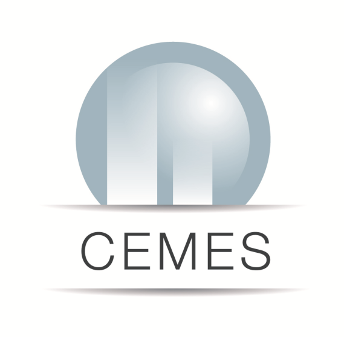

full_cost 
1.0
Contents:
Projects
Activities
Chemistry
Optical Spectroscopy Platform
STM/AFM - DUF Growth
Engineering Platform
Transmission Electron Microscopy platform
Focused Ion beam
PS2I
Sample Preparation Service
Nanomaterial Fabrication
Billings
Administration
FAQ
full_cost
Docs
»
Activities
»
Engineering Platform
View page source
Engineering Platform
¶
(In construction, see the
Optical Spectroscopy Platform
page for an example)